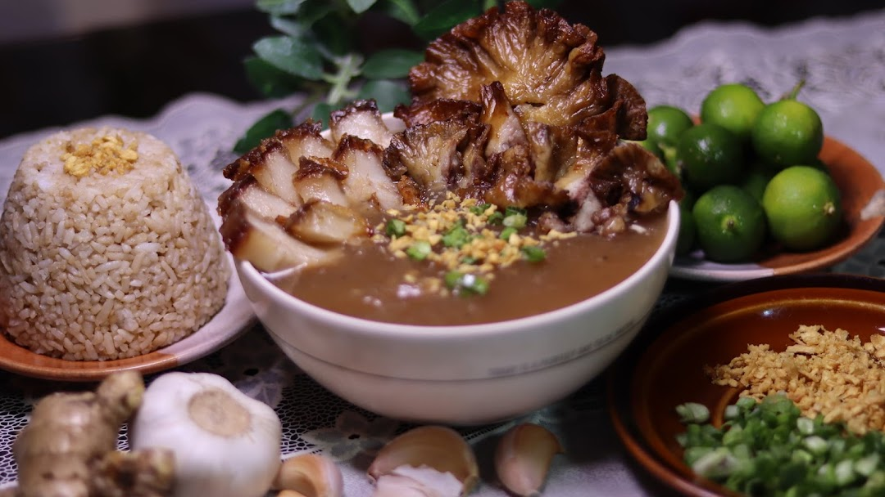

FEATURED DISHES



These are the three best-selling cuisines at Pares Spot. The first picture is one of our "Putok-Batok Pares Combo", the second picture is our "Special Sizzling Pares", and the last is hindi mawawalang "Special Pares Mami."
The term literally means pairs in English and comes from the practice of "pairing" the beef ulam or dish with garlic fried rice and a light beef broth soup, forming a complete meal.
Beef Pares are cubed beef briskets cooked with spices and tenderized to perfection.
These are cubed beef briskets cooked with spices and tenderized to perfection. The aroma of this dish alone is enticing. The taste is captivating.
We serve a different variety of Beef Pares, and besides Pares, we also serve different modern Filipino cuisines. Check below to see what you can expect from our restaurant!
Pares Spot specialty is a very delicious Beef Pares, Beef Mami and different varieties to choose from.
These are the three best-selling cuisines at Pares Spot. The first picture is one of our "Putok-Batok Pares Combo", the second picture is our "Special Sizzling Pares", and the last is hindi mawawalang "Special Pares Mami."

The dish that our chef always recommends is our "Regular Pares Combo", This is a budget-friendly dish that any of us can buy and have a taste of.